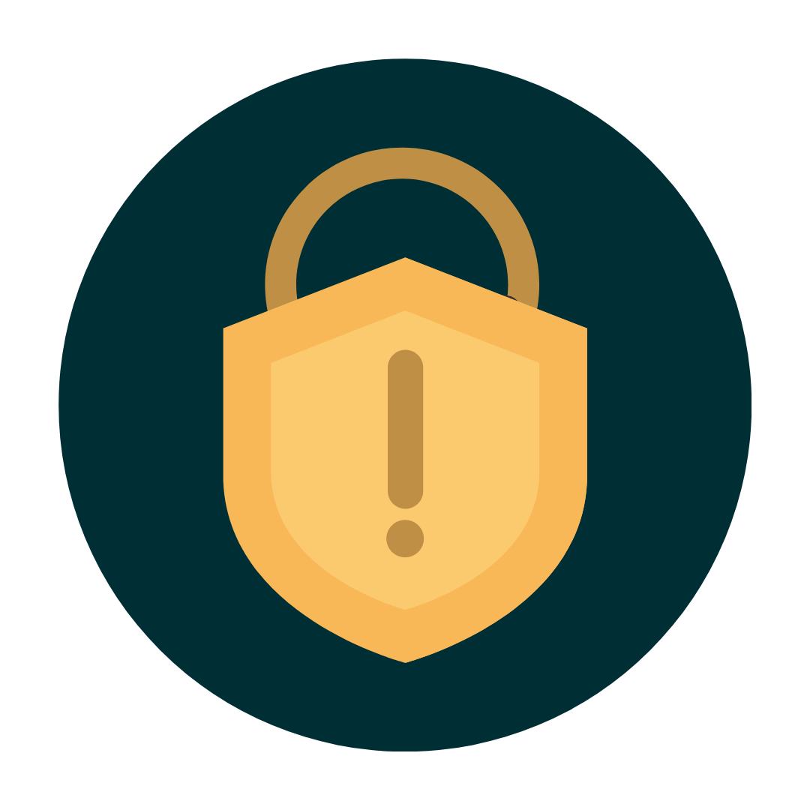
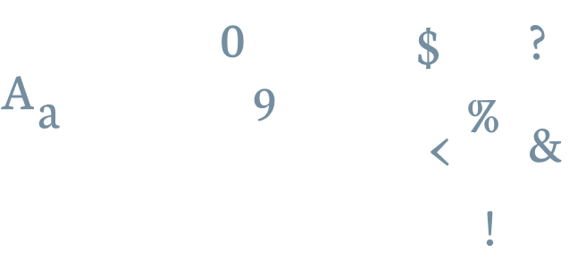

Mit einem sicheren Passwort können Sie Ihre Daten schützen.
So erstellen Sie ein sicheres Passwort:
Nutzen Sie mindestens 8 Zeichen, aber mehr sind immer besser.

Nutzen Sie Gross- und Kleinbuchstaben, Zahlen und Spezialzeichen.
Es hat sich auch gezeigt, dass sich Sätze gut als Passwörter eignen. Beispiel:

Nutzen Sie ein Passwort, dass Sie sich einfach merken können. Aber achten Sie darauf, dass Sie keine persönlichen Informationen nutzen, von denen andere wissen können.

Verwenden Sie jeweils ein anderes Passwort für jede App und jeden Dienst. Ein Passwort-Manager hilft Ihnen dabei, gute Passwörter zu generieren und die Übersicht über sie zu behalten.